Consciousness Science 2026
International Interdisciplinary Conference
October 11–16, 2026 · San Diego, California
Learn More
International Interdisciplinary Conference
The largest and longest-running interdisciplinary conference on consciousness, since 1994.
The Science of Consciousness conference is an established international forum dedicated to interdisciplinary research on the nature and mechanisms of conscious experience and causal agency. Bringing together neuroscientists, clinicians, philosophers, physicists, computational researchers, and scholars from related fields, the meeting fosters rigorous scientific exchange across theoretical and empirical domains.
The 2026 meeting in San Diego will convene approximately 600 to 700 participants for five days of plenary lectures, concurrent sessions, posters, exhibits, and interdisciplinary dialogue. In addition to its academic program, the conference includes carefully curated experiential events that have historically enriched scientific exchange and community building.
The conference also aims to cultivate emerging scholars and foster cross-generational mentorship. The September conference builds on the previously developed scientific program within a strengthened administrative and governance structure designed to ensure long-term sustainability.
Leading researchers from neuroscience, physics, philosophy, and beyond.
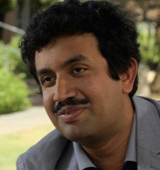
National Institute for Materials Science, Tsukuba, Japan
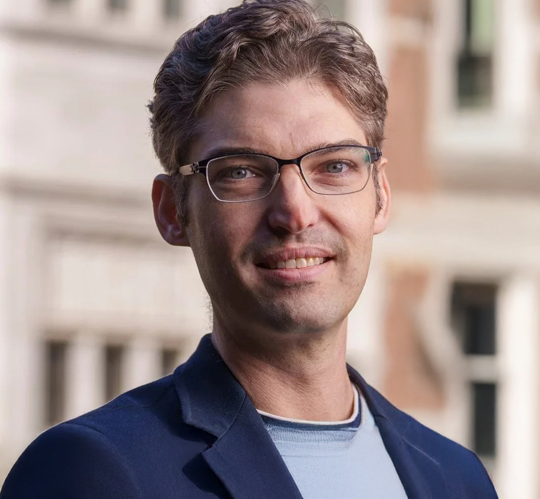
Vanderbilt University
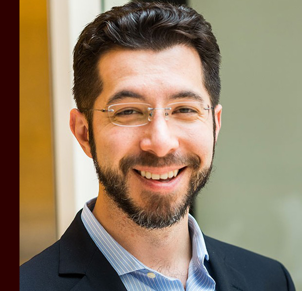
MIT & HHMI
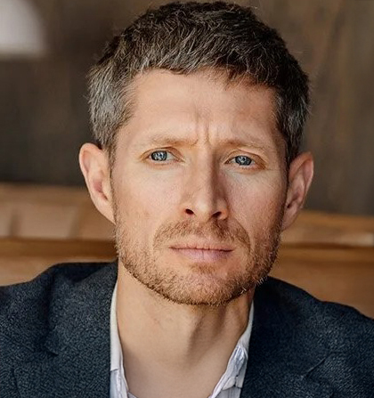
UCSF Neurology
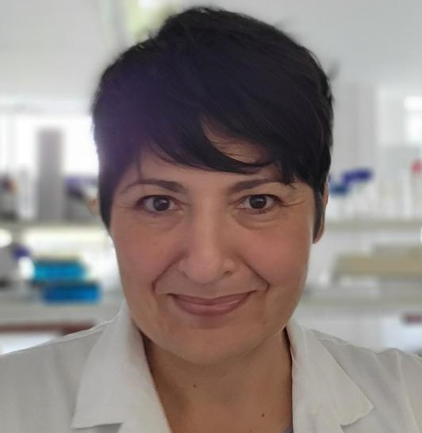
University of Oxford
University of Glasgow
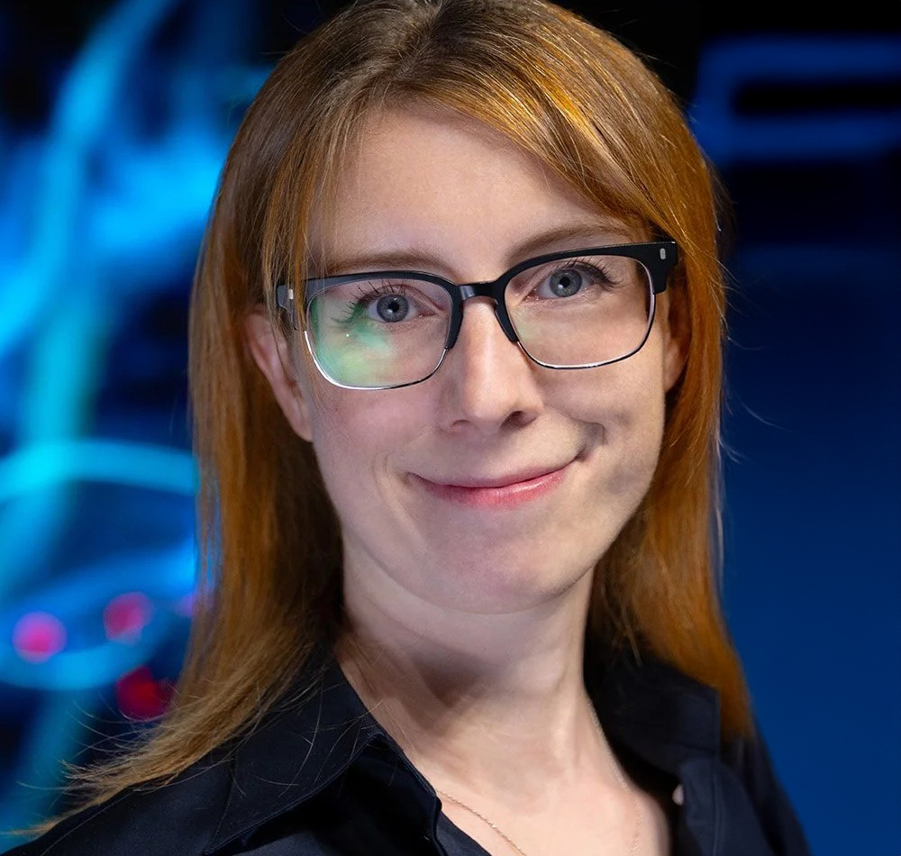
Nirvanic Consciousness Technologies
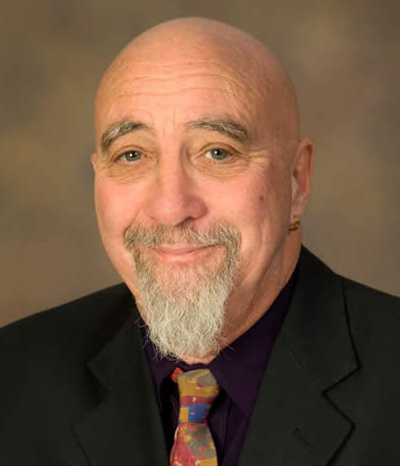
University of Arizona
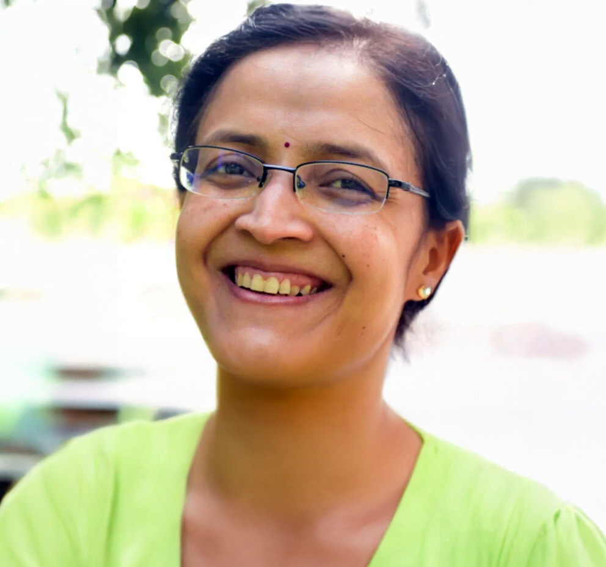
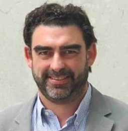
University College London
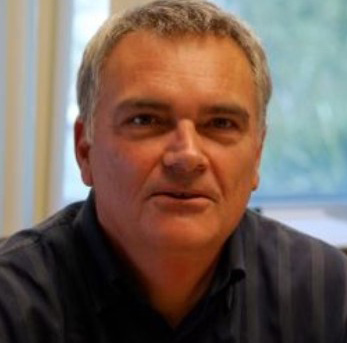
University of Connecticut
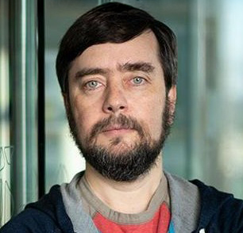
Tufts University
Remote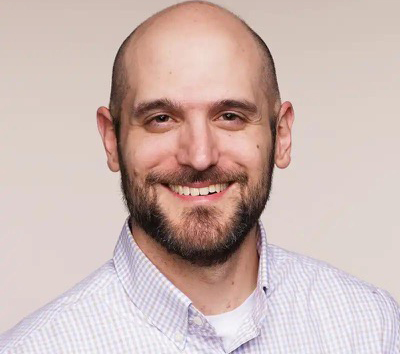
Eleos AI
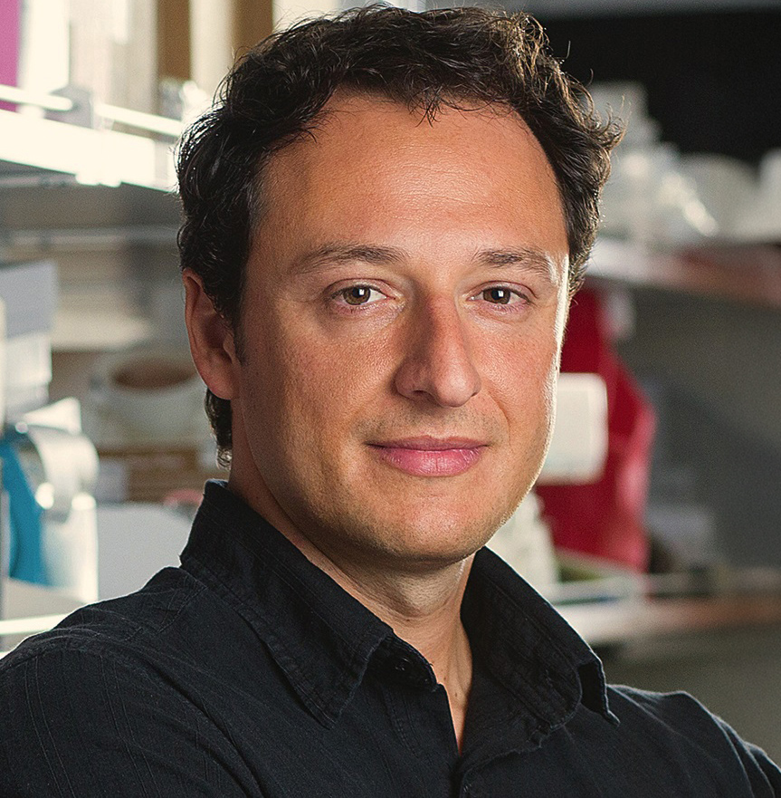
UC San Diego
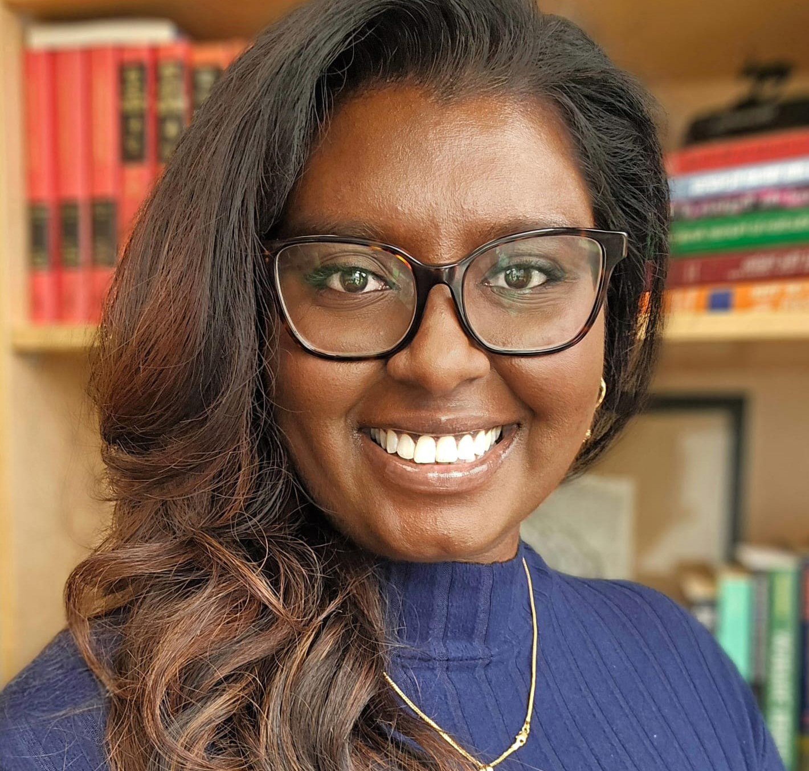
Wilfrid Laurier University
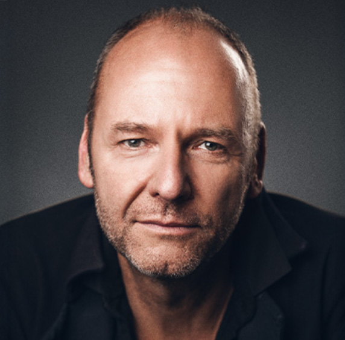
Google Quantum AI
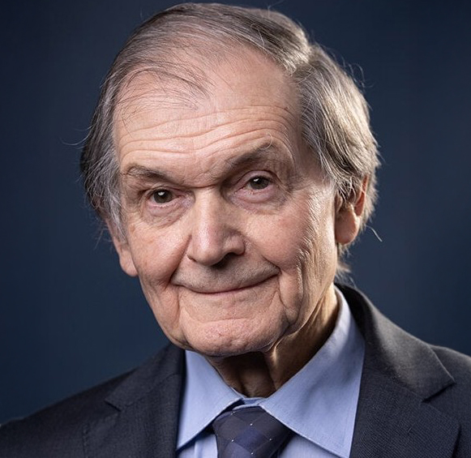
University of Oxford
Remote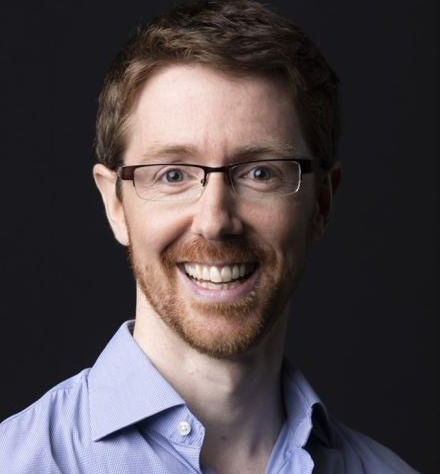
Columbia University
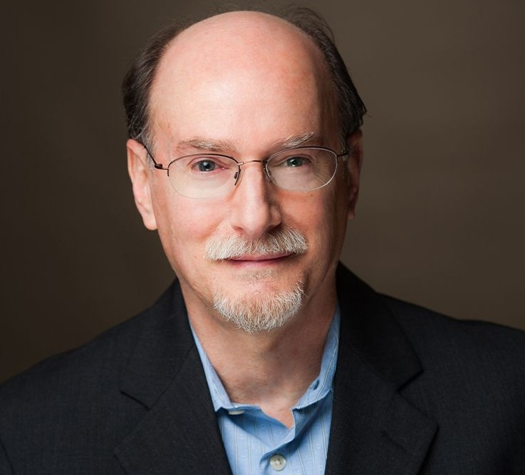
Institute of Noetic Sciences
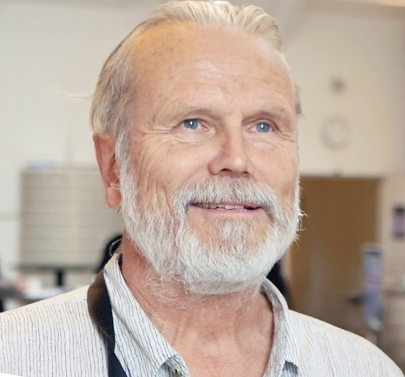
Univ. of Southern Denmark & Santa Fe Institute
Florida Atlantic University
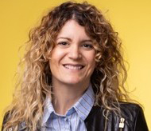
Arizona State University
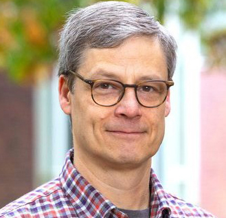
Wellesley College
Exploring the frontiers of consciousness research across disciplines.
Conference leadership and organization.
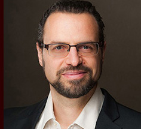
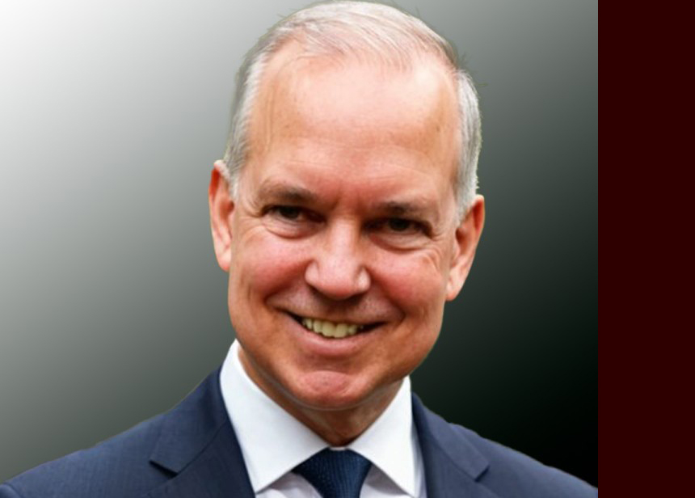
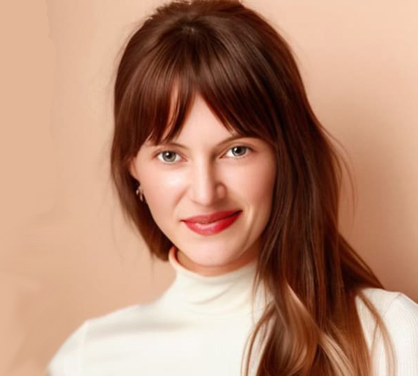
Paradise Point Resort & Spa — San Diego, California — October 11–16, 2026
Paradise Point Resort & Spa is a 44-acre island resort set on Mission Bay, offering a serene tropical setting just minutes from downtown San Diego and its vibrant academic community including UC San Diego, the Salk Institute, and Scripps Research.
The meeting will feature:
Accommodation is available on-site at the resort. Additional hotel information will be announced soon.
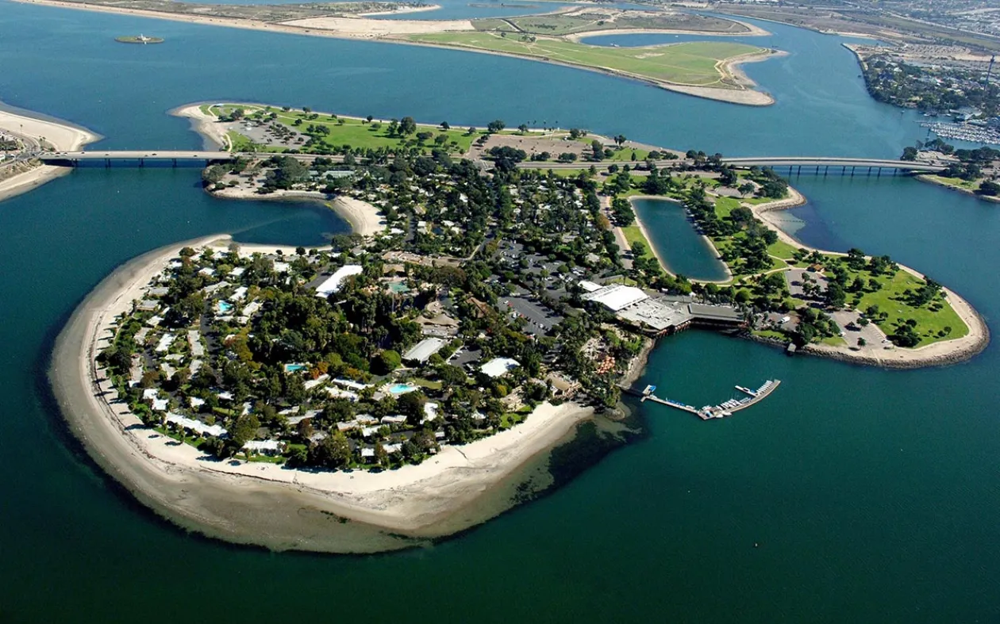